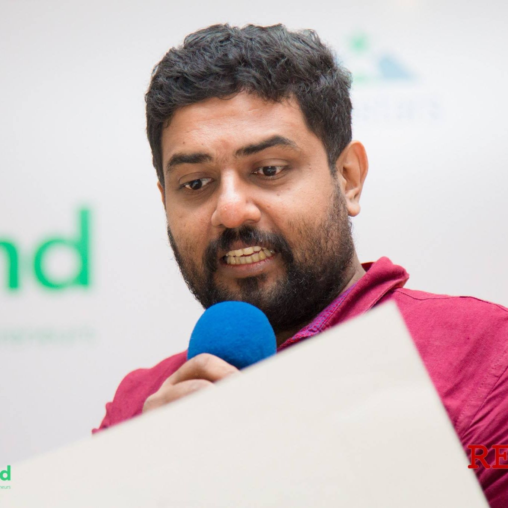

Google Research Grant to build a Sri Lankan Tamil Corpus (2024-2025).
The German Academic Exchange Service-Sustainable Development Goals (DAAD-SDG) grant for the project "DigSAL: Addressing the Digital Divide for South Asian Languages," in collaboration with the University of Konstanz, Germany, the University of Moratuwa, Sri Lanka, and the University of Engineering and Technology, Pakistan (2024-2027).
Microgrant from the University Business Linkage, University of Jaffna, Sri Lanka, to develop a Tamil intent classification for the e-commerce domain (2023).
Fellowship
Herz Fellowship from the Zukunftskolleg, University of Konstanz, Germany (June 2023 – July 2024).
International Visitor Leadership Program (IVLP), U.S. Department of State, 2019
Awards
Member of the team which won the Digital Social Impact award at the e-Suwabhimani 2018 under the category of Government and Citizen Engagement.
Won the Jury’s mention award for a Mobile App built as part of an undergraduate project at the mBillionth-2016: Awards South Asia 2016 held in Delhi, India, August 2016. http://www.mbillionth.in/
Winner of Best Solution Oriented Thesis Award – 2016 for ‘Consumer buying pattern analysis using an efficient approach’ by University Business Linkage Unit of the University of Jaffna. [Together with Nifras Ismail]
Winner of National Best e-Content award – 2016 for the ‘Right2Sight: A mobile app to help visually impaired people to use Mobile phone’ by the ICTA, Sri Lanka. http://www.eswabhimani.lk [Together with Samira Gayan]
Winner of best oral presenter of the Modern Technology and Application track for the paper entitled “Hierarchical Tag-set for Rule-based Processing of Tamil Language”, International Conference on Multidisciplinary Approaches (iCMA), 2014.
Best oral presenter of the Modern Technology and Application award for the paper titled “Hierarchical Tag-set for Rule-based Processing of Tamil Language”, International Conference on Multidisciplinary Approaches (iCMA), 2014.
Mobility grant
Mobility grant from the Information Technology Education and Entrepreneurship Foundation (ITEE Foundation) to present at the FITEN conference, Sacramento, California, USA, July 2023.
Mobility grant from the German Academic Exchange Service - Programs for Project-Related Personal Exchange (DAAD-PPP) to travel to the University of Konstanz, Germany, 2019-2020.
Mobility grant from LK Domain Registry to present a paper at the LFG-2019 conference, ANU, Australia, July 8-10, 2019.
Mobility grant from CTC to present at the conference on "Redeveloping Northern and Eastern Provinces of Sri Lanka," Toronto, Canada, January 15-17, 2017.
Grant from the German Academic Exchange Service (DAAD) to attend the International Summer School in Language Engineering, UCSC, Colombo, 2014.
Mobility grant from Mozilla Foundation to attend the Mozilla Summit, California, USA, 2013.
Grant from the German Academic Exchange Service (DAAD) – Received full financial support to attend the Summer School in Advanced Language Engineering, Nepal, August 26 - September 21, 2012.
Kengatharaiyer Sarveswaran

sarves at univ.jfn.ac.lk
Department of Computer Science
University of Jaffna
Sri Lanka